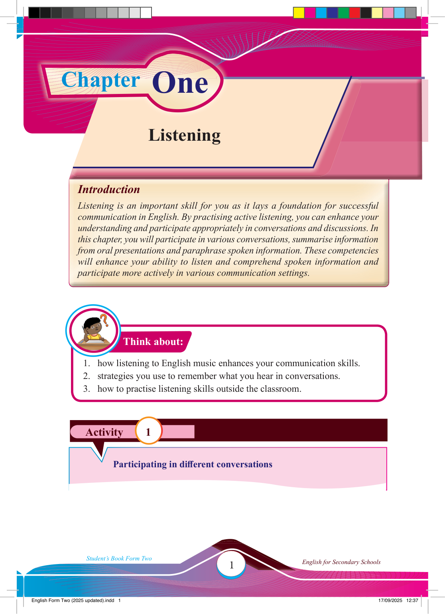

Activity 1


Think about:
Chapter
Listening
One
Introduction
Listening is an important skill for you as it lays a foundation for successful
communication in English. By practising active listening, you can enhance your
understanding and participate appropriately in conversations and discussions. In
this chapter, you will participate in various conversations, summarise information
from oral presentations and paraphrase spoken information. These competencies
will enhance your ability to listen and comprehend spoken information and
participate more actively in various communication settings.
1. how listening to English music enhances your communication skills.
2. strategies you use to remember what you hear in conversations.
3. how to practise listening skills outside the classroom.
Participating in diff erent conversations